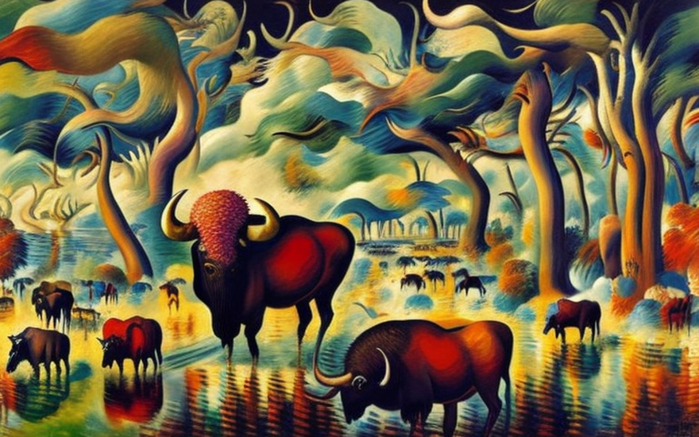
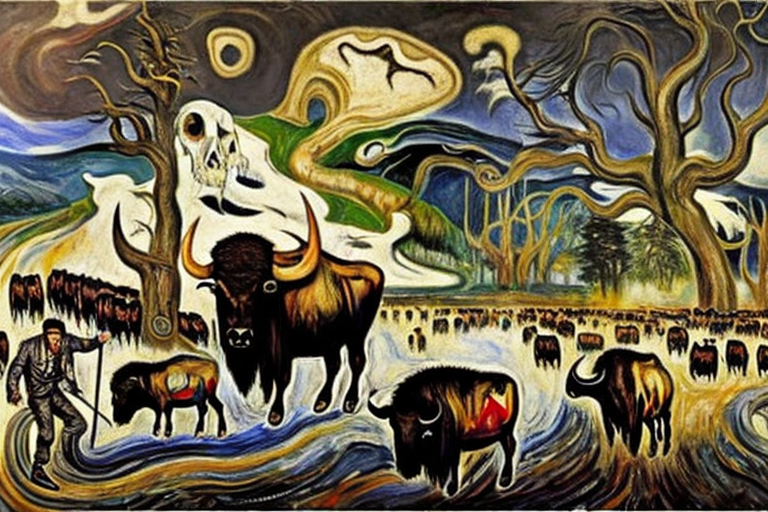
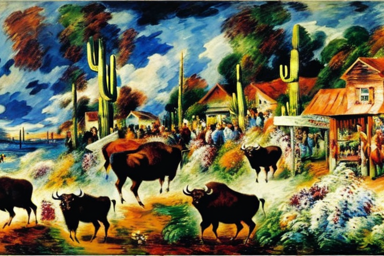
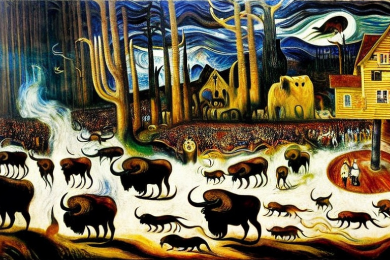
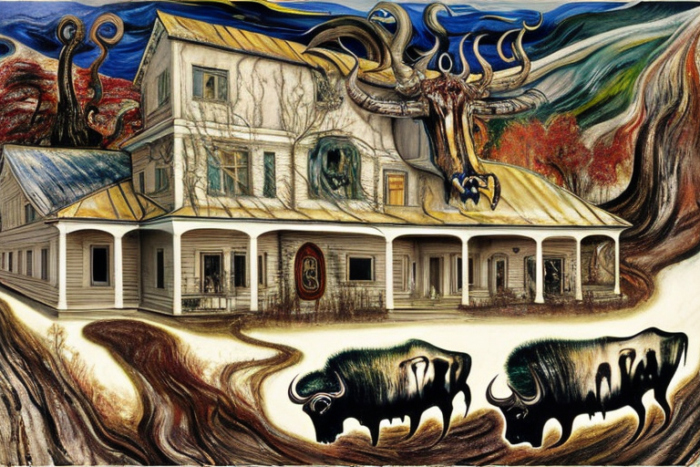
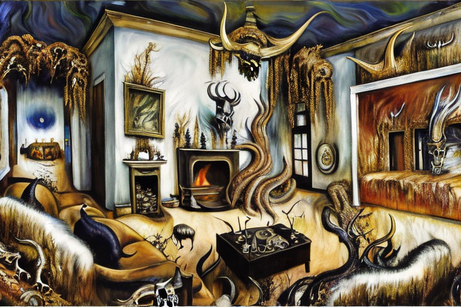
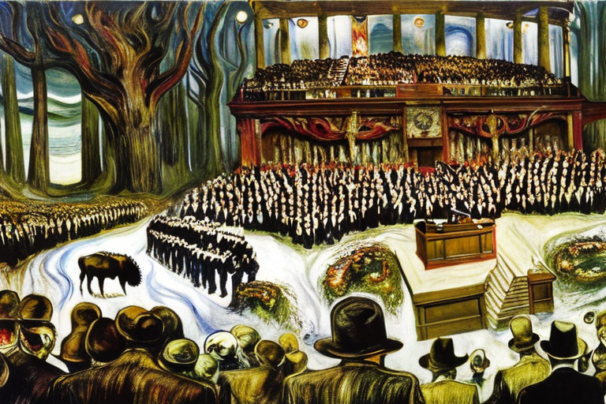

Το πηγάδι ύδατος και ο βούβαλος
Αρχική Σελίδα
Πίνακας Περιεχομένων
Το κατούρημα στον πηγάδι

Στη μικρή πόλη Γουέστφιλντ, φωλιασμένη ανάμεσα στους κυματιστούς λόφους της αμερικανικής καρδιάς, η ζωή ήταν ειρηνική και ειδυλλιακή. Οι κάτοικοι της πόλης ζούσαν απλές ζωές, δουλεύοντας σκληρά στις φάρμες τους και φροντίζοντας τις οικογένειές τους. Το κεντρικό στοιχείο της πόλης ήταν το πηγάδι, το οποίο είχαν σκάψει οι άποικοι πριν από πολλά χρόνια και το οποίο παρείχε φρέσκο, καθαρό νερό στους κατοίκους της πόλης.
Όμως μια μέρα χτύπησε η καταστροφή. Ένα μοναχικό βουβάλι περιπλανιόταν στην πόλη, δελεασμένο από το γλυκό άρωμα των καλλιεργειών που φύτρωναν στα κοντινά χωράφια. Το βουβάλι ήταν ένα υπέροχο πλάσμα, με δασύτριχο τρίχωμα από γούνα και αιχμηρά, κυρτά κέρατα στο κεφάλι του. Αλλά ήταν επίσης ένα άγριο ζώο και δεν είχε καμία αίσθηση των εθίμων και των παραδόσεων της πόλης.
Το βουβάλι τριγυρνούσε στους δρόμους, σταμάτησε στο πηγάδι και, χωρίς δεύτερη σκέψη, ανακουφίστηκε στο δροσερό, καθαρό νερό. Οι κάτοικοι της πόλης τρομοκρατήθηκαν. Γνώριζαν ότι το νερό ήταν πλέον μολυσμένο, καθιστώντας ακατάλληλο για ανθρώπινη κατανάλωση από τα βρωμερά απόβλητα του βουβάλου.
Στην αρχή, η μεταμόρφωση του νερού ήταν διακριτική. Το κρυστάλλινο υγρό πήρε μια ελαφρώς θολή όψη και μια αχνή, δυσάρεστη οσμή άρχισε να αναδύεται από το πηγάδι. Αλλά όσο περνούσε η ώρα, η αλλαγή γινόταν πιο έντονη. Το νερό πήρε ένα αρρωστημένο κίτρινο χρώμα, και η μυρωδιά έγινε πιο δυνατή, κυριεύοντας τις αισθήσεις οποιουδήποτε πλησίαζε.
Οι κάτοικοι της πόλης ήταν χαμένοι. Ήξεραν ότι δεν μπορούσαν να συνεχίσουν να πίνουν το μολυσμένο νερό, αλλά δεν είχαν άλλη πηγή γλυκού νερού. Προσπάθησαν να καθαρίσουν το πηγάδι με χημικά και φίλτρα, αλλά τίποτα δεν φαινόταν να λειτουργεί. Τα ούρα του βουβάλου είχαν εισχωρήσει βαθιά στο πηγάδι, μολύνοντας κάθε σταγόνα νερού που προερχόταν από αυτό.
Οι μέρες κύλισαν σε εβδομάδες, και η κατάσταση στο Γουέστφιλντ γινόταν πιο τρομερή. Οι άνθρωποι άρχισαν να αρρωσταίνουν επειδή έπιναν το μολυσμένο νερό και συζητήθηκε η μεταφορά ολόκληρης της πόλης σε μια νέα τοποθεσία. Όμως οι κάτοικοι της πόλης ήταν πεισματάρηδες και αρνήθηκαν να εγκαταλείψουν τα σπίτια τους και τον τρόπο ζωής τους.
Η μεταμόρφωση της πόλης

Ο απόηχος του βουβάλου που ούρησε στο πηγάδι της πόλης είχε αφήσει τους κατοίκους του Γουέστφιλντ θυμωμένους και εκδικητικούς. Η κάποτε ειρηνική και αρμονική πόλη είχε πλέον κατακλυστεί από σκέψεις αντεκδίκησης και μίσους προς το βουβάλι. Οι άνθρωποι κατηγόρησαν το βουβάλι ότι κατέστρεψε τη ζωή τους και την υγεία της κοινότητάς τους.
Τις επόμενες μέρες, μια ομάδα κυνηγών έφτασε στην πόλη, πρόθυμοι να βοηθήσουν τους χωριανούς στο πρόβλημα με τα βουβάλια. Οι κυνηγοί ήταν σκληροτράχηλοι άνδρες, φορούσαν γούνινα καπέλα, δερμάτινα μπουφάν και τουφέκια. Είχαν έρθει από όλη τη χώρα για να βοηθήσουν την πόλη να εξοντώσει τα βουβάλια από την ήπειρο. Είχαν ακούσει για τα δεινά της πόλης και έσπευσαν να την εκμεταλλευτούν.
Οι κυνηγοί έπιασαν γρήγορα δουλειά, στήνοντας παγίδες και δελεάζοντας το βουβάλι με δόλωμα. Η πόλη δεν είχε δει ποτέ τόση δραστηριότητα στους δρόμους της. Οι κυνηγοί ήταν θορυβώδεις και απτόητοι, φώναζαν και ούρλιαζαν καθώς κυνηγούσαν τα βουβάλια. Ο ήχος των πυροβολισμών και τα μουγκρίσματα των βουβάλων γέμισαν τον αέρα.
Ξάφνου μέσα σε λίγες μέρες, η πόλη άρχισε να αλλάζει. Οι δρόμοι δεν ήταν πλέον ασφαλείς και οι άνθρωποι φοβόντουσαν να εγκαταλείψουν τα σπίτια τους. Οι κυνηγοί είχαν μετατρέψει την πόλη σε εμπόλεμη ζώνη και φαινόταν ότι τα βουβάλια έχαναν.
Σύντομα, οι κυνηγοί είχαν συλλέξει ένα μεγάλο αριθμό από δέρματα και κρανία βουβάλου, τα οποία με περηφάνια εμφάνιζαν στην πόλη ως τρόπαια. Οι κάτοικοι του Γουέστφιλντ, κάποτε τρομοκρατημένοι από τη σκέψη των βουβαλιών να ουρούν στο πηγάδι τους, τώρα επευφημούσαν τους κυνηγούς και πανηγύριζαν τις νίκες τους. Οι κυνηγοί είχαν γίνει ήρωες στα μάτια των ανθρώπων και τα βουβάλια ήταν τίποτα άλλο παρά μια αμελητέα ενόχληση.
Καθώς οι κυνηγοί συνέχισαν τη δουλειά τους, η πόλη άλλαξε ακόμη περισσότερο. Το άλλοτε όμορφο και ποικιλόμορφο τοπίο ήταν τώρα άγονο και άψυχο. Τα κοπάδια των βουβάλων, που κάποτε τριγυρνούσαν στην ύπαιθρο σε μεγάλους αριθμούς, τώρα είχαν αποδεκατιστεί. Οι άνθρωποι ήταν ευχαριστοιμένοι σε μια ήπειρο απαλλαγμένη από βουβάλια.
Αλλά καθώς οι κυνηγοί μάζεψαν τον εξοπλισμό τους και ετοιμάζονταν να φύγουν από την πόλη, ένα περίεργο συναίσθημα επικράτησε στην πόλη. Ο κόσμος είχε πάρει αυτό που ήθελε, αλλά με ποιο κόστος; Η πόλη, που κάποτε ήταν τόσο ειρηνική και αρμονική, ήταν μία σκιά του προηγούμενου εαυτού της. Οι δρόμοι ήταν άδειοι, τα χωράφια άγονα και ο μόνος ήχος που ακουγόταν ήταν ο άνεμος που φυσούσε στους άδειους δρόμους.
Η αντίδραση των κυνηγών

Καθώς η πόλη του Γουέστφιλντ πάλευε να συνέλθει από τον απόηχο της εξόντωσης των βουβάλων, ένας νεαρός άνδρας ονόματι Μπίλι είχε ένα σχέδιο να πλουτίσει γρήγορα. Ο Μπίλι είχε μεγαλώσει στο κέντρο του Γουέστφιλντ, τη φτωχότερη και πιο υποβαθμισμένη περιοχή της πόλης. Πάντα ονειρευόταν να αφήσει πίσω του τη φτωχή ζωή του και να φτιάξει κάτι για τον εαυτό του. Και είδε ευκαιρία στο παράνομο εμπόριο βουβαλιών.
Ο Μπίλι είχε ακούσει για μια ομάδα βουβάλων που είχε καταφέρει να ξεφύγει από τους κυνηγούς και τώρα περιφέρονταν ελεύθερα σε μια κοντινή κοιλάδα. Κατάστρωσε ένα σχέδιο για να αιχμαλωτίσει τα βουβάλια και να τα πουλήσει σε πλούσιους αγοραστές που εξακολουθούσαν να εκτιμούν το βουβαλίσιο κρέας. Με τη βοήθεια μερικών φίλων, ο Μπίλι ξεκίνησε να αιχμαλωτίσει τα βουβάλια και να τα φέρει πίσω στο Γουέστφιλντ.
Η αιχμαλωσιά δεν ήταν εύκολη. Τα βουβάλια ήταν άγρια και απρόβλεπτα και οι κυνηγοί που δεν κατάφεραν να τα σκοτώσουν ήταν ακόμα σε επιφυλακή. Όμως ο Μπίλι και οι φίλοι του ήταν αποφασισμένοι να πετύχουν. Χρησιμοποίησαν όλες τις γνώσεις τους για τη γη και τη μυστικότητά τους για να παγιδέψουν ένα βουβάλι χωρίς να τους μυριστούν οι κυνηγοί.
Μόλις τσάκωσαν το βουβάλι, ο Μπίλι και οι φίλοι του έστησαν μια παράνομη επιχείρηση, πουλώντας κρέας βουβάλου σε πλούσιους αγοραστές από όλη τη χώρα. Είχαν μια σταθερή ροή πελατών, που ήθελαν να γευτούν το απαγορευμένο κρέας.
Όμως το παράνομο εμπόριο δεν πέρασε απαρατήρητο. Οι κυνηγοί, που είχαν πλουτίσει από την εξόντωση του βουβάλου, έβλεπαν το παράνομο εμπόριο ως απειλή για την επιχείρησή τους. Άρχισαν να ερευνούν και σύντομα οι αρχές βρέθηκαν στα ίχνη της παράνομης επιχείρησης.
Καθώς οι αρχές στένευαν τον κλοιό, ο Μπίλι και οι φίλοι του οδηγήθηκαν στην απελπισία. Ήξεραν ότι έπρεπε να ξεφορτωθούν το βουβάλι πριν τους πιάσουν. Αλλά τα βουβάλια ήταν πλέον μέρος της ζωής τους και δεν άντεχαν να τα αφήσουν να φύγουν. Είχαν δεσμευτεί με τα μεγαλοπρεπή ζώα και τα έβλεπαν ως σύμβολα της δικής τους επιτυχίας.
Στο τέλος, οι αρχές έπιασαν τον Μπίλι και τους φίλους του. Η παράνομη επιχείρηση έκλεισε και τα βουβάλια μεταφέρθηκαν στους κυνηγούς. Ο Μπίλι και οι φίλοι του συνελήφθησαν και οι κάτοικοι του Γουέστφιλντ αφέθηκαν να αναλογιστούν το τίμημα της απληστίας τους.
Η απαγόρευση του βοδινoύ κρέατος

Καθώς η σκόνη κατακάθισε από το παράνομο εμπόριο βουβάλων, οι αξιωματούχοι της πόλης του Γουέστφιλντ έβαλαν τάξη στην κατάσταση. Η αποκάλυψη της παράνομης επιχείρησης είχε προκαλέσει σοκ στην κοινότητα και οι αξιωματούχοι γνώριζαν ότι έπρεπε να δράσουν γρήγορα για να αποκαταστήσουν την τάξη.
Το πρώτο πράγμα που έκαναν ήταν να απαγορεύσουν κάθε βουβαλίσιο κρέας από την πόλη. Ανέφεραν ανησυχίες σχετικά με την ασφάλεια του κρέατος και την πιθανότητα εμφάνισης ασθενειών, αλλά πολλοί στην κοινότητα υποψιάζονταν ότι υπήρχαν περισσότερα στην ιστορία.
Άρχισαν να κυκλοφορούν φήμες ότι οι ίδιοι οι αξιωματούχοι της πόλης είχαν διασυνδέσεις με το παράνομο εμπόριο βουβάλων. Κάποιοι μάλιστα πρότειναν ότι είχαν κάνει τα στραβά μάτια στο εμπόριο, επιτρέποντάς του να γιγαντωθεί με αντάλλαγμα μίζες και άλλες χάρες.
Οι αξιωματούχοι διέψευσαν τις φήμες, επιμένοντας ότι η απαγόρευση του βουβαλίσιου κρέατος ήταν απαραίτητη για την προστασία της υγείας της κοινότητας. Αλλά οι αρνήσεις τους κατέπεσαν στο κενό και οι κάτοικοι του Γουέστφιλντ άρχισαν να χάνουν την πίστη στους ηγέτες τους.
Καθώς περνούσαν οι εβδομάδες, οι αξιωματούχοι συνέχισαν να επιμένουν στην απαγόρευση, παρόλο που κάποιοι άρχισαν να αμφισβητούν τα κίνητρά τους. Κάποιοι επεσήμαναν το γεγονός ότι οι ίδιοι οι αξιωματούχοι συνέχισαν να τρώνε κρέας βουβαλίσιου κρυφά, παρόλο που είπαν στην υπόλοιπη πόλη ότι δεν ήταν ασφαλές.
Η κατάσταση έφτασε στο απροχώρητο όταν μια ομάδα πολιτών, εξοργισμένη από την απαγόρευση και καχύποπτοι για τα κίνητρα των υπαλλήλων, αποφάσισε να πάρει την κατάσταση στα χέρια της. Εισέβαλαν στο δημαρχείο, αναζητώντας στοιχεία για διαφθορά και παράνομη δραστηριότητα.
Αυτό που βρήκαν ήταν συγκλονιστικό. Κουτιά βουβαλίσιου κρέατος, με σαφή επισήμανση ως παράνομα, στοιβάζονταν στην ιδιωτική αποθήκη των αξιωματούχων. Ήταν ξεκάθαρο ότι οι αξιωματούχοι έλεγαν ψέματα στους ανθρώπους του Γουέστφιλντ καθ’ όλη τη διάρκεια της βουβαλοαπαγόρευσης.
Η είδηση διαδόθηκε γρήγορα και σύντομα οι αξιωματούχοι αντιμετώπισαν την οργή της κοινωνίας. Αναγκάστηκαν να παραιτηθούν και μια νέα ομάδα ηγετών εξελέγη για να πάρει τη θέση τους.
Ο άρχοντας του εμπορίου των βουβάλων

Η κατάρρευση του παράνομου εμπορίου βουβάλων στο Γουέστφιλντ άφησε ένα κενό εξουσίας που σύντομα γέμισε ένας νέος λαθρέμπορος, ένας άνθρωπος που ήταν γνωστός ως “Ο Νονός των Βουβάλων”. Ήταν ο πιο επιτυχημένος λαθρέμπορος βουβαλιών από όλους και επιδείκνυε τον πλούτο και τη δύναμή του με έναν πλούσιο τρόπο ζωής που περιελάμβανε σπίτια διακοσμημένα με μέρη βούβαλου.
Το σπίτι του Νονού των Βουβάλων ήταν ένα μνημείο της επιτυχίας του. Κάθε δωμάτιο ήταν στολισμένο με κέρατα βουβάλου, κρανία και δέρματα. Οι τοίχοι ήταν καλυμμένοι με ταπετσαρίες βουβάλου και τα δάπεδα ήταν από δέρμα βουβάλου. Ακόμα και οι πολυέλαιοι ήταν φτιαγμένοι από βουβαλίσια κέρατα.
Ο χορός των εγκληματιών

Το επίκεντρο του σπιτιού ήταν μια μεγάλη αίθουσα, όπου ο Νονός των Βουβάλων διεξήγαγε τα πολυτελή πάρτι του. Στην αίθουσα δέσποζε ένα τεράστιο κεφάλι βούβαλου τοποθετημένο στον τοίχο, με τα διαπεραστικά του μάτια να φαίνονται να ακολουθούν κάθε κίνηση των καλεσμένων.
Οι ίδιοι οι καλεσμένοι ήταν οι κλασικοί ύποπτοι του εγκληματικού υπόκοσμου. Κατέφθαναν από όλη τη χώρα για να απολαύσουν τον πλούτο και τη δύναμη του Νονού των Βουβάλων και να γευτούν τον απαγορευμένο καρπό του παράνομου εμπορίου βουβάλων.
Αλλά η επιτυχία του Νονού των Βουβάλων δεν ήταν μακρά. Καθώς οι αρχές κατέστειλαν το παράνομο εμπόριο, στόχευσαν το βλέμμα τους στον Νονό των Βουβάλων. Ιχνηλάτησαν την επιχείρηση λαθρεμπορίου του και σύντομα αντιμετώπισε την πλήρη ισχύ του νόμου.
Στο τέλος, ο Νονός των Βουβάλων πιάστηκε και οδηγήθηκε στη φυλακή για τα εγκλήματά του. Το σπίτι του κατασχέθηκε από τις αρχές και τα βουβάλια αφαιρέθηκαν για να τα δωρίσουν σε μουσεία και άλλα εκπαιδευτικά ιδρύματα.
Η σωτηρία του ποταμού

Τα νεα διαδόθηκαν για την πτώση του Νονού των Βουβάλων και αξιωματούχοι από τον Λευκό Οίκο συγκεντρώθηκαν για να συζητήσουν το μέλλον του λαθρεμπορίου βουβάλων στις Ηνωμένες Πολιτείες. Ήταν αποφασισμένοι να βάλουν τέλος στο παράνομο εμπόριο οριστικά.
Ένας αξιωματούχος, μιλώντας υπό τον όρο της ανωνυμίας, περιέγραψε την απομάκρυνση του Νονού των Βουβάλων ως σημείο καμπής στον αγώνα κατά της παράνομης διακίνησης άγριων ζώων.
“Στείλαμε ένα μήνυμα σε όποιον πιστεύει ότι μπορεί να επωφεληθεί από το παράνομο εμπόριο απαγορευμένων ζώων”, είπε. “Θα σας ακολουθήσουμε και δεν θα ησυχάσουμε μέχρι να οδηγηθείτε στη δικαιοσύνη”.
Η καταστολή του λαθρεμπορίου βουβάλων ήταν έντονη και ενδελεχής. Οι υπηρεσίες επιβολής του νόμου συνεργάστηκαν στενά με ομάδες καταστολής για τον εντοπισμό των λαθρεμπόρων και των δικτύων τους. Μυστικοί πράκτορες διείσδυσαν στο παράνομο εμπόριο, συγκεντρώνοντας στοιχεία που χρησιμοποιήθηκαν για να καταδικαστούν δεκάδες λαθρέμποροι και οι συνεργοί τους.
Ως αποτέλεσμα της καταστολής, το παράνομο εμπόριο βουβάλου εξαφανίστηκε σχεδόν στις Ηνωμένες Πολιτείες. Τα μεγαλοπρεπή και βρώμικα αυτά ζωντανά εξανεμίστηκαν λόγω του ανελέητου κυνηγιού και τα ώθησαν στο χείλος της εξαφάνισης. Και οι κάτοικοι του Γουέστφιλντ μπορούσαν ξανα να πίνουν από τα πηγάδια τους χωρίς φόβο μόλυνσης από ούρα βουβαλου.
Όπως είπε ο αξιωματούχος του Λευκού Οίκου, “Έχουμε ευθύνη να προστατεύσουμε τον υδάτινο πλούτο για τις μελλοντικές γενιές. Το πηγάδι είναι σύμβολο της πλούσιας ιστορίας και κληρονομιάς της χώρας μας και πρέπει να κάνουμε ό,τι μπορούμε για να το διατηρήσουμε ακέραιο στο παρόν και το μέλλον.”